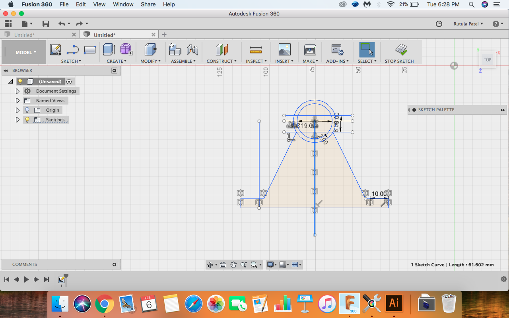
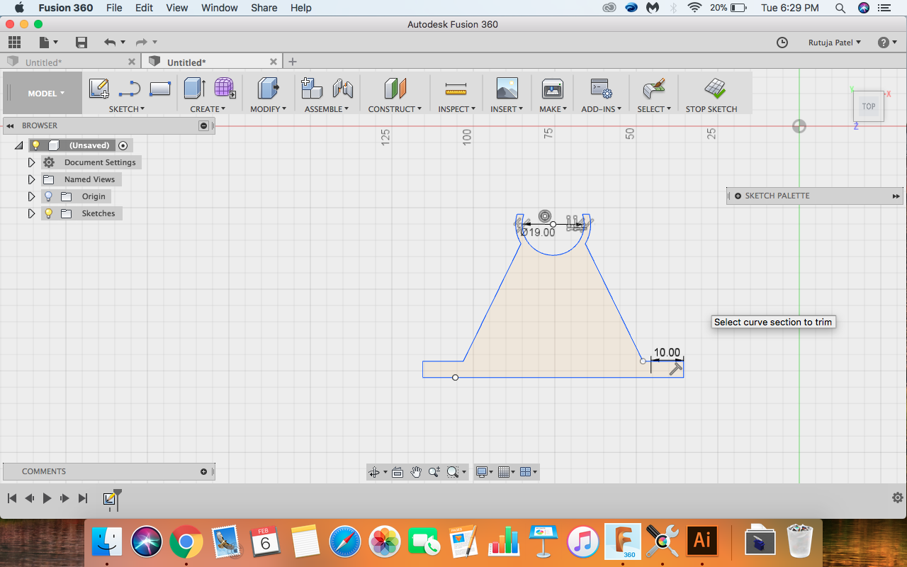
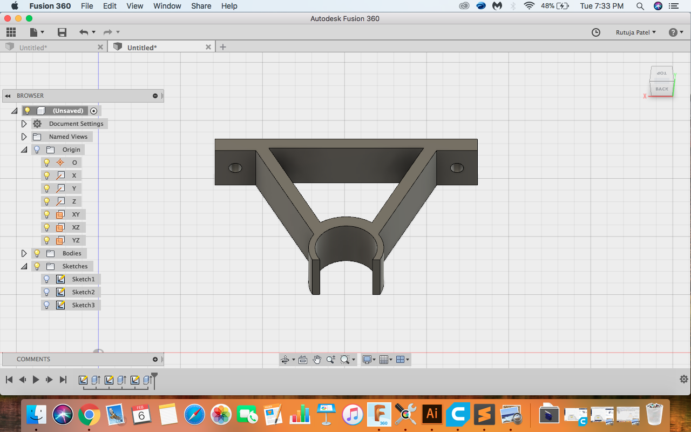

Week 3 | Computer Aided Design | Jan 31
Fab Academy 2018 | Archive
Computer Aided Design
I decided to make a flute stand as I will need it in my final project. I am new to CAD Designing so this week was a bit challengig for me but I could understand the basics. I choosed to design my 3D model in Fusion 360 and Autocad.
First step of making was to take dimention of my flute and sketch it into my sketchbook. I made a rough sketch with dimention and tried to make it in the softwre.
I checked for fusion tutorials and refered tutorials on it's Officila Website
- Making a 2D sketch of flute stand
- Made a rough sketch of the stand
- Take the dimention of flute
- Rough Sketch with dimentions
- Search for pipe holding brackets
- Check for fusion 360 Tutorials
- Creating Sketch in Fusion 360
- Commands Used
- Rough Sketch 
- Final Sketch 
- Making a 3D sketch of the stand
- By extruding the sketch you will find the 3D sketch
- Now make holes for the support
- Line
- Circle
- Trim
- Offset
- Mirror
- Extrude
